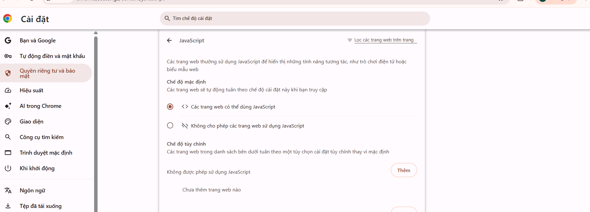
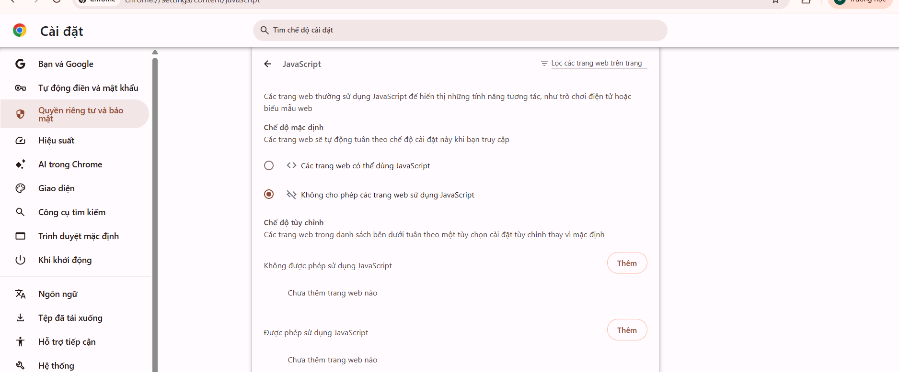

EXERCISE 8.1
Enabling/Disabling JavaScript
Minh chứng thao tác cài đặt JavaScript trong Chrome
Bài này thực hiện trực tiếp trong phần cài đặt trình duyệt, không cần viết mã. Hai ảnh bên dưới ghi lại trạng thái cho phép và không cho phép JavaScript.


Để hiển thị ảnh trong trang này, lưu hai ảnh chụp màn hình bạn đã gửi vào thư mục images/evidence/ với tên javascript-enabled.png và javascript-disabled.png.